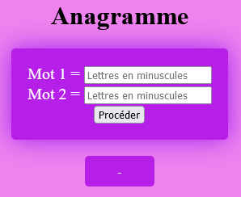

Les mots CHIEN, CHINE et NICHE sont dits anagrammes.
Les mots MAHDI et HAMDI sont dits anagrammes.
Une anagramme est un mot formé en changeant de place les lettres d'un autre mot. (Une anagramme de gare est rage.)
Concevoir une page Web pour tester si deux mots alpgabétiques minuscules sont anagrammes ou non.
